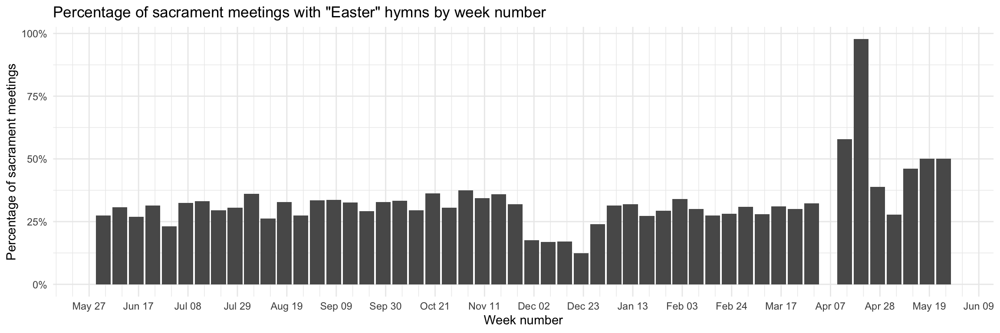
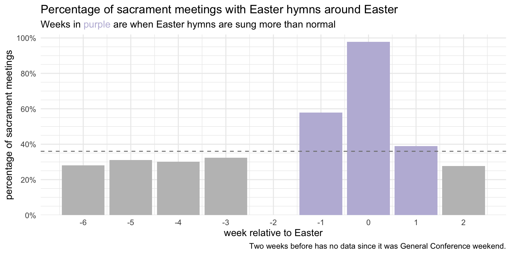
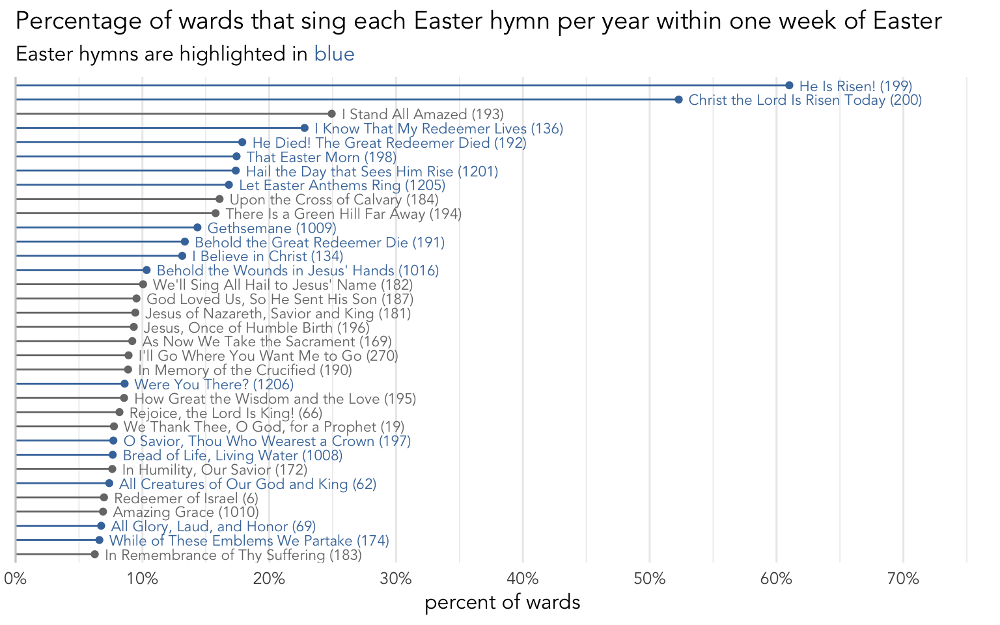
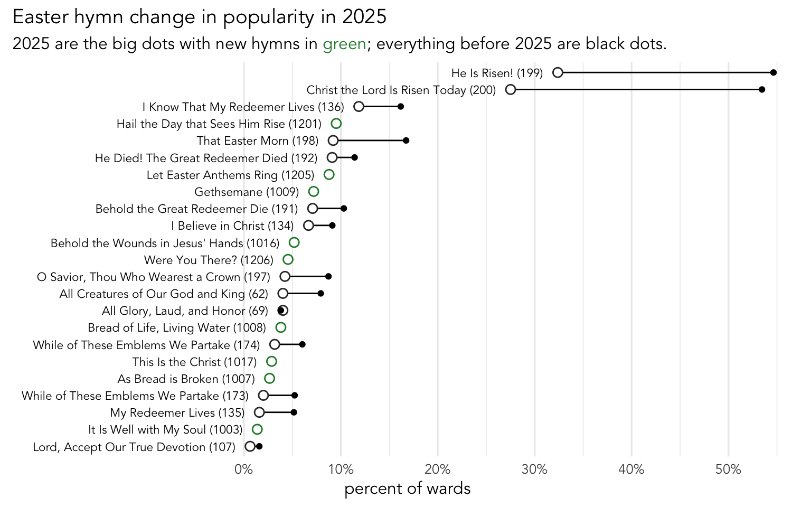

Easter 2025
holidays
frequency
Last year, I posted about general trends with hymns around Easter. Now that we have a couple new Easter hymns, I thought it’d be good to take a look at this year’s data and see how it compares. This post is based primarily on data from 1,069 wards. You can read more about the full dataset here.
In my previous post, I went into detail trying to figure out which hymns are considered “Easter” hymns. I included hymns that were listed in the table of contents under “Easter” or listed in the index under “Easter”, “Resurrection”, or “Sacrament.” I’ll use the same list, but I’ll add the new hymns that fit that criteria. This includes three Easter hymns (
The Easter Season
Again, like I said in my previous post, since many of these sacrament hymns are commonly sung outside of the Easter season, we can’t assume that if a ward sings, say,
Since some of these new hymns are generally pretty common, I’ll have to recalculate those numbers based on 2025 data. (See details below if you’d like.)
Technical details
First, here is a plot showing the proportion of sacrament meetings in my dataset that have at least one “Easter” hymn across the year. Here, I’ll just focus on sacrament meetings since June 2, 2024 when the first batch of new hymns came out.
We can see that other than Easter and the week before, which has many Easter hymns, and in December, which has mostly Christmas hymns, the number of wards singing “Easter” hymns is pretty stable. So, rather than use the technique I did in my previous plot of getting the average number of Easter hymns sung in week not near holidays, I’ll just take the average of all these weeks except for those within a month of Christmas or Easter.
Anyway, the purpose of all this avoidance of holidays is to get the typical percentage of sacrament meetings that contain one or more of these “Easter” hymns during times when you wouldn’t expect them. Basically, get a baseline. As it turns out, the average percentage of sacrament meetings that sing these hymns is 31%. The upper end is about 36%.
So, that means that we can consider any week around Eastertime where more than 36% of wards sing “Easter” hymns as being more than normal and indicative of wards singing these hymns to celebrate Easter.
It turns out it’s around 36% of wards per week. That is quite a bit higher than the 27% I reported in my previous post. But, keep in mind that six new sacrament hymns were added (
In Figure 1, I’ve highlighted all the weeks that have more than 36% of sacrament meetings:

Last year, three weeks before just barely made the cut for having more Easter hymns than usual. This year, it didn’t. So, it was only the week before, Easter itself, and the week after where we saw a significant number of Easter hymns beyond what is normally sung. The number of wards singing Easter hymns on Easter itself is comparable to last year (around 97%). But last year, about 45% of wards sang Easter hymns on Palm Sunday. This year, it was about 57%. So, it seems like the addition of the two new Easter hymns really made a difference! Looking back at previous years, the only time I’ve seen more wards singing Easter hymns on Palm Sunday is when General Conference falls on Easter.
What’s sung around Easter?
Now that we’ve established which hymns are Easter hymns and when those hymns are sung relative to Easter, let’s answer the questions of which of these Easter hymns are sung when.
We’ll first start off by looking at how common the Easter hymns were during this Easter season. The following plot shows the percentage of wards that sang each hymn at least some point within one week of Easter.

Superficially, relatively little has changed compared to last year, except with the addition of new hymns.

As you can see, for all but one hymn, the big dot, which represents 2025, is further to the left than the smaller black dot, which represents everything before 2025. This means that basically every hymn was sung in fewer wards in 2025 than in previous years. The obvious explanation for this is the addition of the new hymns, and as you can see in the green dots, there were several that were sung around Easter this year. So, with more hymns to choose from, and the same number of slots to fill, something’s going to take a hit. It looks like proportionally, the two most popular ones, were affected the most.
The one teeny exception to this pattern is
When are hymns sung within the Easter season?
Let’s dive into each of those hymns then and see when during that three-week period they were sung. Figure 4 shows how often each Easter hymn is sung across the Easter season. Here, the gray represents general tendencies before 2025 and the red represents the data from 2025.
Starting with the most popular hymns,
When during sacrament meeting?
The last thing I want to show is when during sacrament meeting these hymns are sung. By that, I mean I want to lok at whether hymns are sung as opening, intermediate, or closing hymns. (We’ll ignore sacrament hymns in this plot.) Last year, I only showed this plot for the two most common hymns but this time I’ll show the ones that are most directly related to Easter. Figure 5 shows those results. The gray is the general trend from before 2025 and the blue shows just the 2025 data.
The pattern shown here is one that I can’t quite make sense of. If we just focus on the hymns from the 1985 hymnal, we see that they are all more popular as opening hymns in 2025 than they were before this year. They’re also all less commonly sung as closing hymns in 2025. This suggests that there is a shift from the end of the meeting towards the beginning for these hymns. We would expect then that the new hymns take their place as closing hymns. But, if we now look at those three hymns, we see that they’re all about twice as commonly sung as opening hymns than closing hymns. So, every hymn is more likely an opening hymn than a closing hymn. What are people singing as closing hymns then? I’m not sure, but it’s a cool pattern to see!
Summary
Last year, I ended the analysis of Easter hymns by saying that I hope the new hymnal has Easter hymns. I’m grateful we have more so that we can sing more Easter hymns each year, especially beyond Easter Sunday itself. It seems like these new hymns have been incorporated quite well in Sacrament meeting. However, it seems like these new hymns are mostly taking the place of the old ones, rather than adding to them. We had a few more wards singing more Easter hymns on Palm Sunday, but I’d love to see that extended to more weeks before Easter. I guess we’ll see if we get more Easter hymns in later batches of new hymns!